EKYLIBRE : GUIDE DE DÉMARRAGE RAPIDE
EKYLIBRE : DÉMARRAGE RAPIDE
GUIDE DE DÉMARRAGE RAPIDE
1 - Prérequis
2 - Introduction
3 - Parcellaire
4 - Exploitation
5 - L’interface
6 - Stock & Personnel
7 - Production
8 - Accès
Dans ce chapitre vous allez découvrir :
Cliquez sur le lien "Production" dans le "Menu principal" ou sur le bouton "Production" de la page d'accueil :
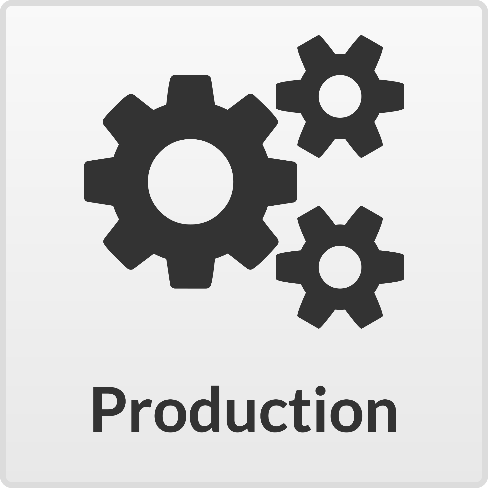
Si vous avez intégré les données TelePAC, le « Tableau de bord de la production » affiche les zones cultivables de l'exploitation pour la campagne en cours. Pour rappel, les zones cultivables sont les parcelles physiques, durables dans le temps qui ne dépendent pas des campagnes. Une fois qu'elles sont bien enregistrées, il n'y a donc plus besoin de revenir dessus, sauf cas particulier pour ajout ou modification (vente ou achat de terres agricoles).
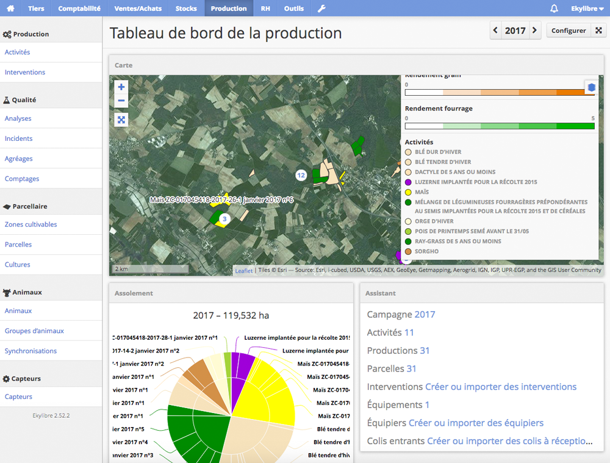
Le « Tableau de bord de la production » après intégration TelePAC
Si vous n'avez pas besoin de créer de nouvelles activités, passez directement à la section b (« Procédure pour créer des productions ») de ce chapitre, sinon voici comment créer les nouvelles activités que vous souhaitez gérer dans l'application.
A – Procédure pour créer de nouvelles activités
Si aucune activité n'a encore été importée (via TelePAC) ou créée dans Ekylibre lors d'une campagne précédente ou dans l'assistant de démarrage rapide, ou si vous souhaitez simplement en ajouter de nouvelles, le processus suivant vous guide pour créer une nouvelle activité dans l'application.

Dans la barre latérale du module "Production", cliquez sur "Activités" dans la rubrique "Production" symbolisée par l'icône avec des engrenagespour afficher la liste des activités. Cliquez sur le bouton "Ouvrir" et sélectionnez "Nouvelle activité".
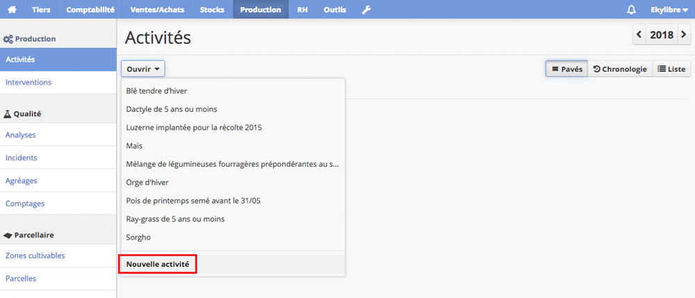

Remplissez tous les champs obligatoires signalés par une astérisque de couleur rouge avec les informations requises pour la définir correctement. Vous pouvez cocher les cases "Utiliser les comptages" et "Utiliser les agréages" pour utiliser ces outils pour cette activité. Une fois cochés, il sera possible de paramétrer ces fonctionnalités supplémentaires.
Cliquez sur pour valider l'opération.
pour valider l'opération.
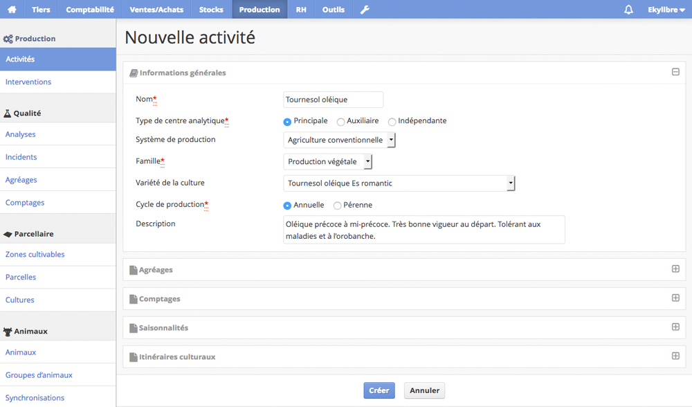

Pour les cultures pérennes (comprenant les vergers, les pépinières, les vignes), choisissez si la date de récolte est rattachée à la campagne en cours ou à la campagne de l'année suivante.

La nouvelle activité est maintenant disponible dans la liste du bouton "Ouvrir". Vous pourrez la sélectionner pour créer une nouvelle production comme décrit dans la section b (« Procédure pour créer des productions dans une campagne ») de ce chapitre.
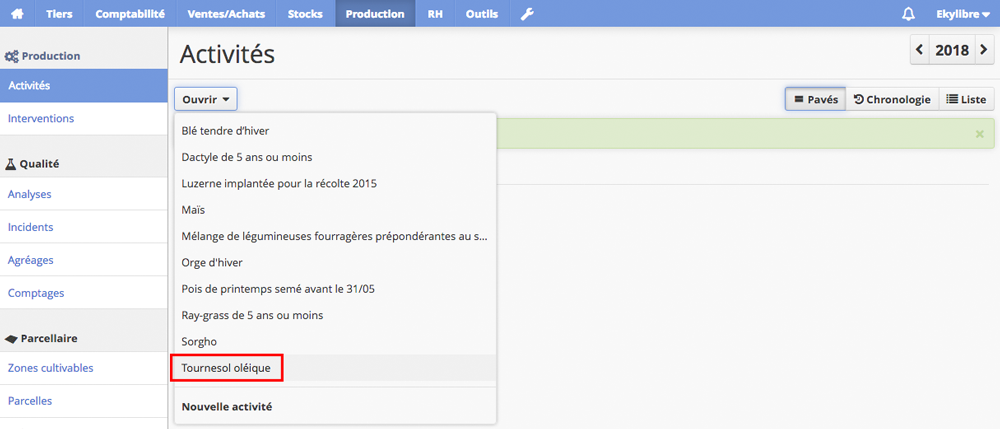

Répétez ce processus pour chaque nouvelle activité que vous souhaitez passer en production dans l'application.
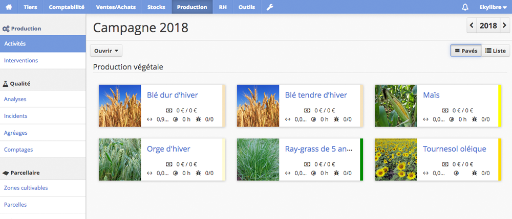
Vous pouvez maintenant affecter les activités aux zones cultivables qui deviendront des parcelles comme expliqué dans le chapitre 3 (Parcellaire – Tableau 1).
Visualisez une campagne en naviguant avec les flèches à gaucheet à droite de l'affichage de l'année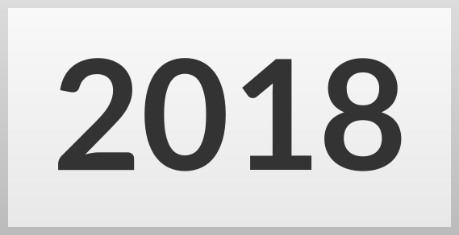.
de l'affichage de l'année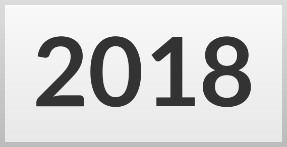.
A – Procédure pour créer des productions
Le processus suivant vous guide pour créer de nouvelles productions dans l'application.
En haut à droite du "Tableau de bord de la production", choisissez la campagne. Basculez vers l'année souhaitée, celle pour laquelle le cycle de production occupe la durée la plus significative (généralement n+1) pour afficher le "Tableau de bord de la production" correspondant.
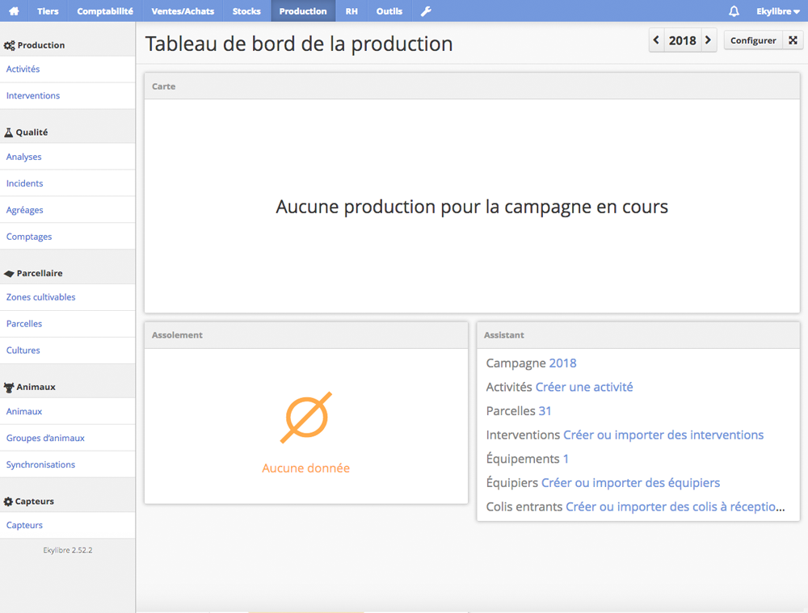
Dans la barre latérale du module "Production", cliquez sur "Activités" dans la rubrique "Production" symbolisée par l'icône avec des engrenagespour afficher la liste des activités.
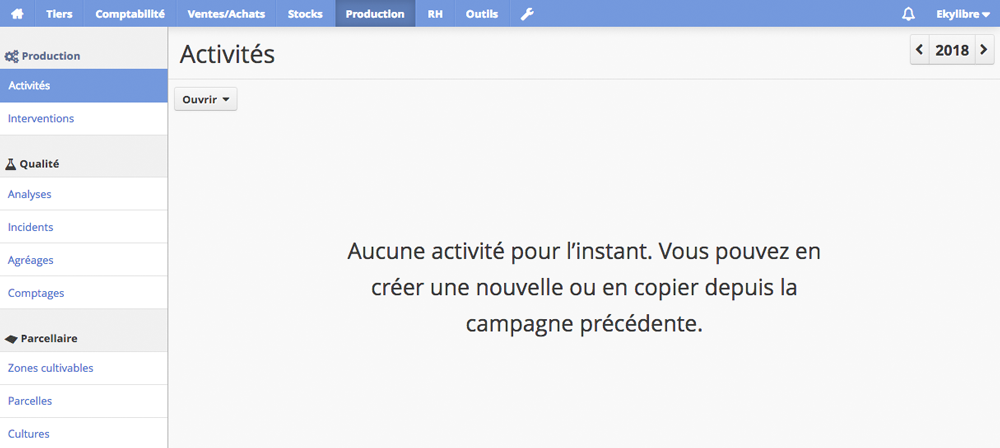
Cliquez sur le bouton "Ouvrir". La liste affiche toutes les activités disponibles :
a - celles déclarées à la PAC si vous avez intégré les données TelePAC dans l'application
b - celles héritées d'une campagne précédente
c - celles définies dans la section a (« Création de nouvelles activités ») de ce chapitre ou dans l'assistant de démarrage
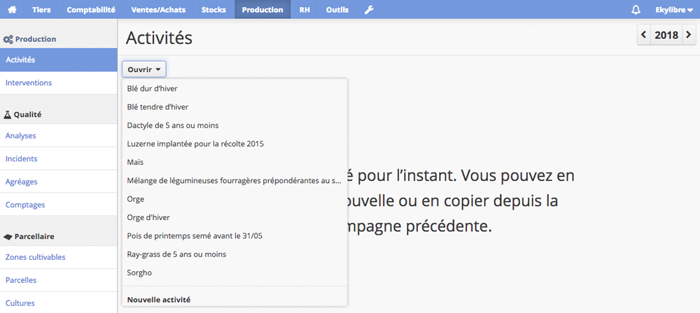
Choisissez dans la liste une activité et l'application affiche automatiquement celle-ci dans la fenêtre principale. Vous pouvez modifier l'affichage "pavés" ou "liste" avec les boutons situés en haut à droite de la fenêtre principale
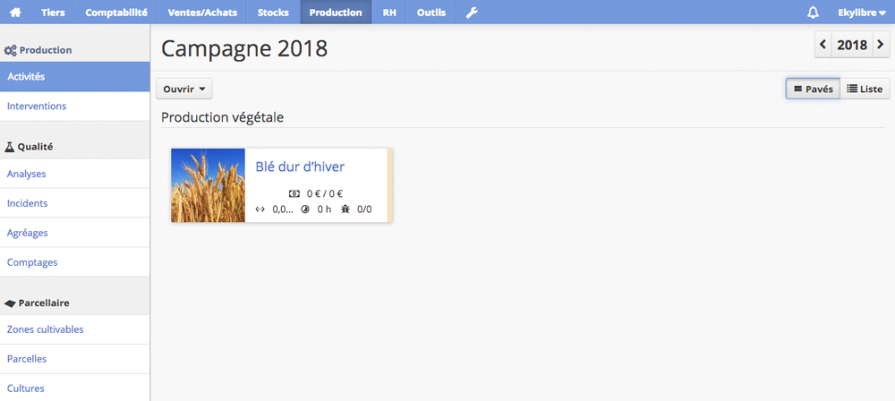

Cliquez sur le nom de l'activité puis, dans "Production", cliquez sur le bouton "Nouveau".
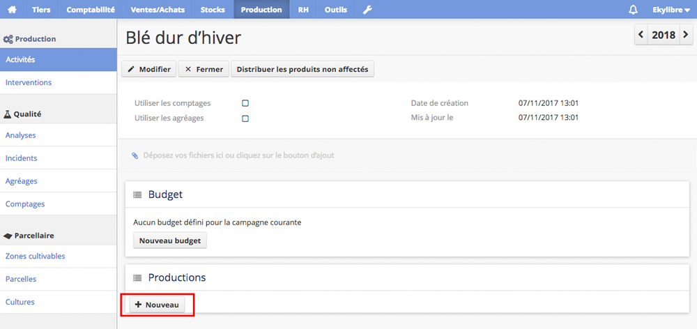

Saisissez les dates de début et de fin de la période de production dans les champs ouvrant sur des calendriers.
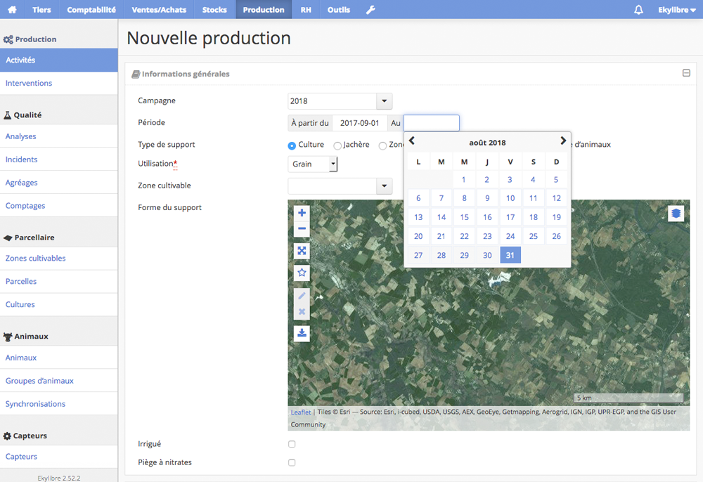

Pour la période de production, sélectionnez les dates comprenant la totalité du cycle labour-semis-récolte. Elles peuvent être à cheval sur deux années comme illustré dans le schéma ci-dessous (moyennes constatées).

Dans le menu "Zone cultivable", choisissez la zone à assoler. Les zones listées sont celles issues de l'intégration du fichier TelePAC ou d'un fichier géographique, et celles dessinées à la main dans l'assistant de démarrage.
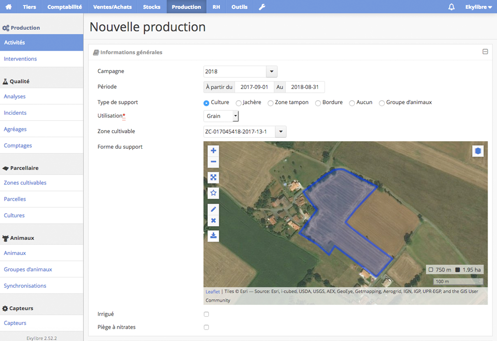
Vous pouvez utiliser la totalité de la zone cultivable ou vous servir des outils de dessin (les mêmes que ceux employés dans le chapitre 4 - (Exploitation) pour la modifier si vous souhaitez la diviser pour assoler des productions différentes.
Passez de préférence en mode plein écran avec le bouton "Agrandissement" pour bénéficier d'un large espace de travail et modifiez la zone avec le bouton"Crayon". Si la zone est trop difficile à modifier, supprimez-la avec le bouton "Croix" et dessinez la nouvelle zone avec le bouton "Étoile". N'oubliez pas d'enregistrer vos modifications via le petit menu horizontal en cliquant sur "Terminer" ou sur "Sauver". Une fois la nouvelle zone créée, pressez la touche "esc" pour revenir à un affichage normal. La nouvelle parcelle est centrée dans la carte.
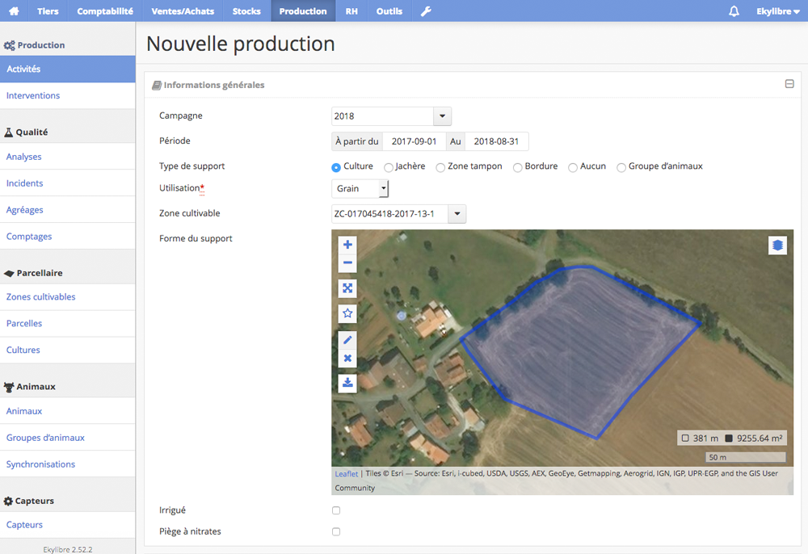
Cliquez sur en bas de la fenêtre principale pour valider l'opération.
en bas de la fenêtre principale pour valider l'opération.
La nouvelle parcelle s'affiche alors en vert.
La création d'une nouvelle production entraîne automatiquement la création d'une nouvelle parcelle associée.
La liste des parcelles est automatiquement enrichie pour l'activité choisie.
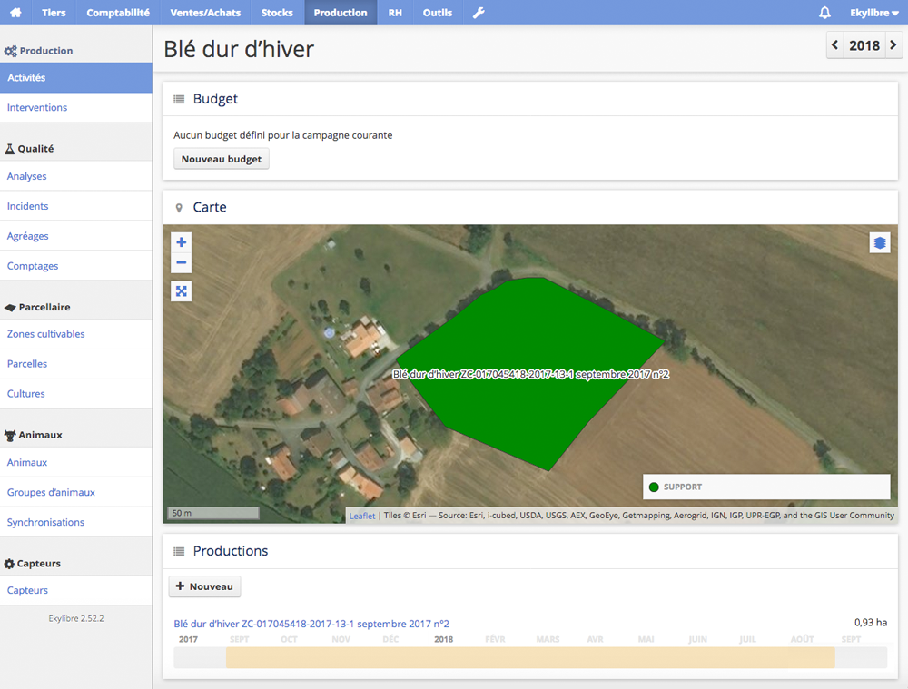
Maintenant que la parcelle est créée, des interventions peuvent être réalisées sur celle-ci (labour, semis, pulvérisation, récolte, etc).
Cette section du chapitre implique que vous ayez préalablement procédé à la réception d'un colis de semences commandé auprès d'un fournisseur pour son stockage afin de réaliser l'intervention de semis sur la parcelle (voir chapitre 6 - Production).
A – Procédure pour saisir une intervention de semis
Le processus suivant vous guide pour saisir une intervention de semis dans l'application.
Cliquez sur le lien "Production" dans le "Menu principal" ou sur le bouton "Production" de la page d'accueil :
Dans la barre latérale du module, cliquez sur "Interventions" dans la rubrique "Production" symbolisée par l'icône avec des engrenagespour afficher l'écran d'accueil des interventions.
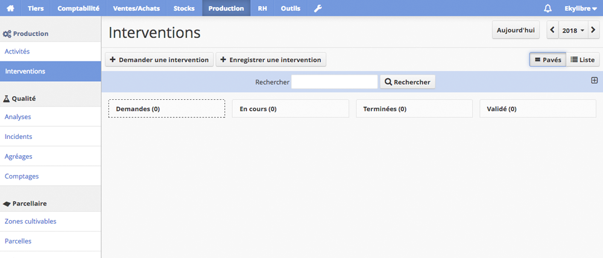
Cliquez sur le bouton "Enregistrer une intervention", puis sélectionnez "Semis" dans le menu "Implantation des cultures".
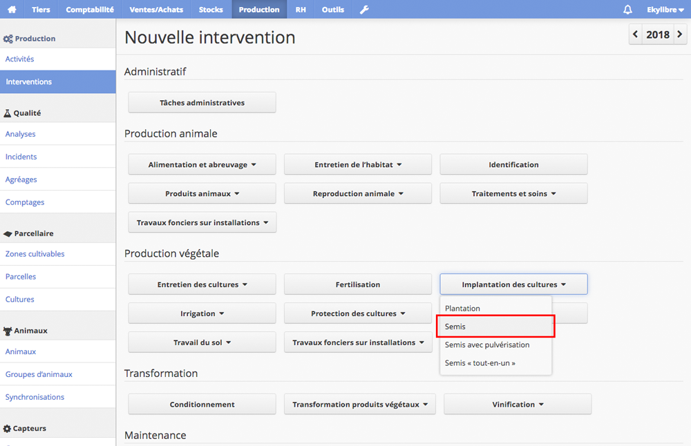
Remplissez tous les champs signalés par une astérisque de couleur rouge avec les informations requises pour la définir correctement.
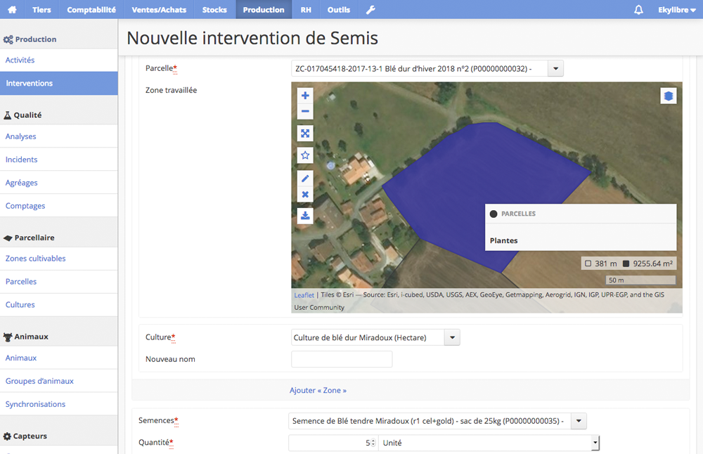
Cliquez sur en bas de la fenêtre principale pour valider l'implantation de la culture. Répétez l'opération pour chaque intervention de semis à réaliser sur les différentes parcelles.
en bas de la fenêtre principale pour valider l'implantation de la culture. Répétez l'opération pour chaque intervention de semis à réaliser sur les différentes parcelles.
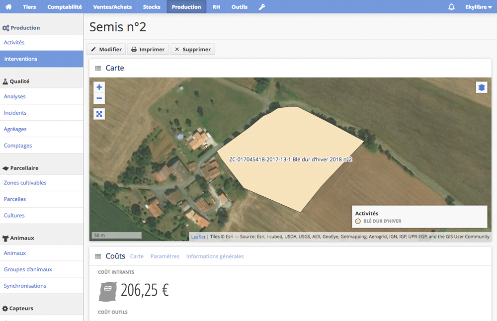
Cliquez sur le lien "Production" dans le "Menu principal" ou sur le bouton "Production" de la page d'accueil pour afficher le "Tableau de bord de la production" mis à jour pour la campagne choisie.
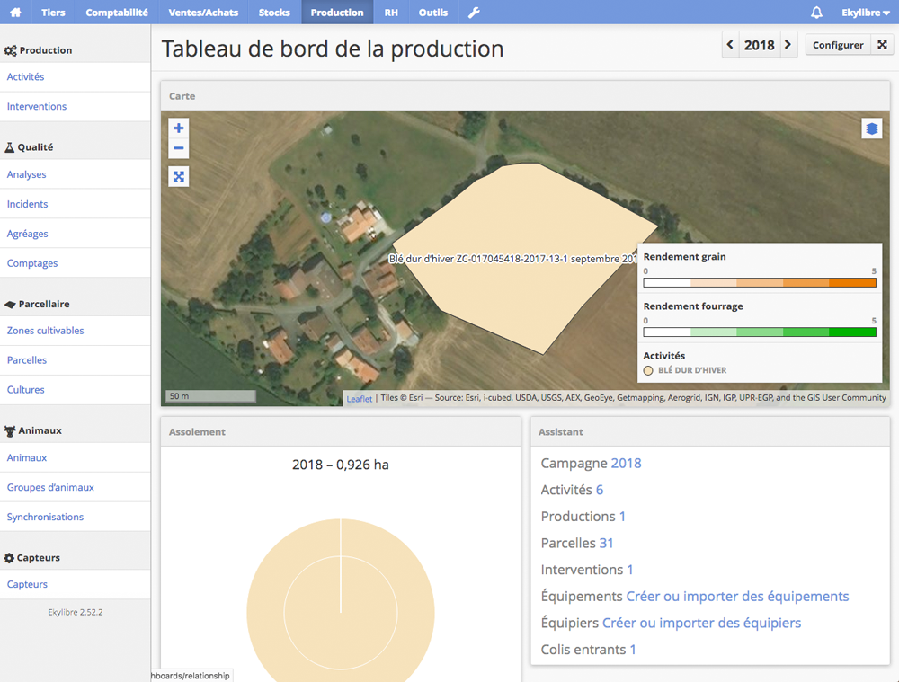
Passez au chapitre suivant de ce guide.